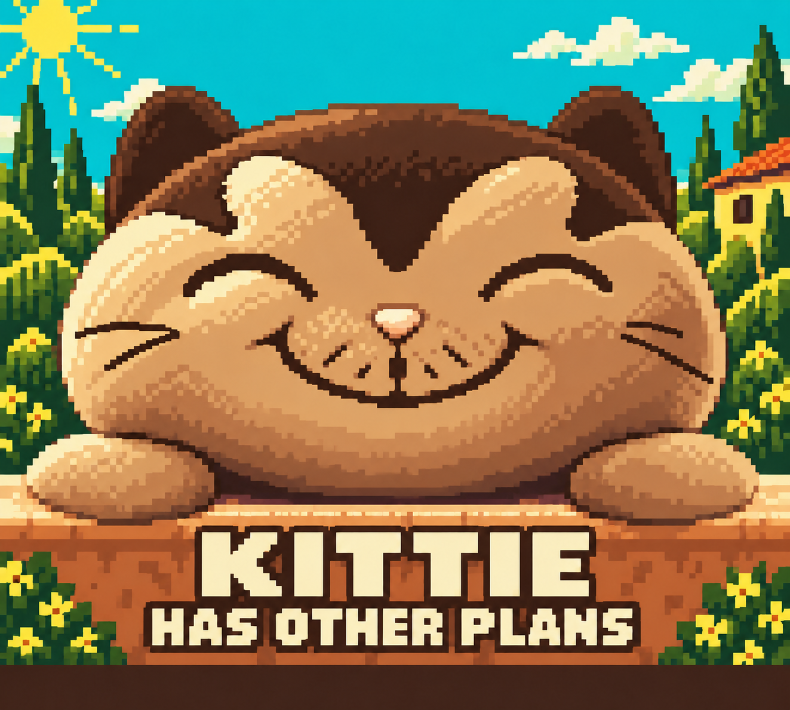

Final cover
The native revision keeps the uneven stitched whiskers from Kittie's photographs and adds more rounded chin below his smile. Broad warm shading separates the head, its cast shadow, and the stone ledge. Sky teal stays outside the fur.

Actual 160 × 144 pixels
The imported scene uses 301 distinct tiles after flip reuse, within the 384-tile budget. Seven background palettes each contain four RGB555 colors; the eighth slot remains reserved for the level selector. The conversion checks that sky colors cannot appear outside sky regions. These images are actual emulator captures.
A or Start opens the selector, and B closes it. Both the downloadable ROM and the official browser-export ROM completed all three stages and recovered saved unlocks after a soft restart. The current browser preview visibly shows this final cover.
Download ROM · Game guide · Native capture evidence
Art source and original character references
The source was revised with built-in Image Generation, then reconstructed into native tile palettes. Intermediate cover versions have been removed; the final source and its prompt are retained. Judge the small ROM image above for device delivery; the larger source is retained for future revisions.

Exact revision prompt · Source and final prompt record · Original plush reference

Previously approved carry animation